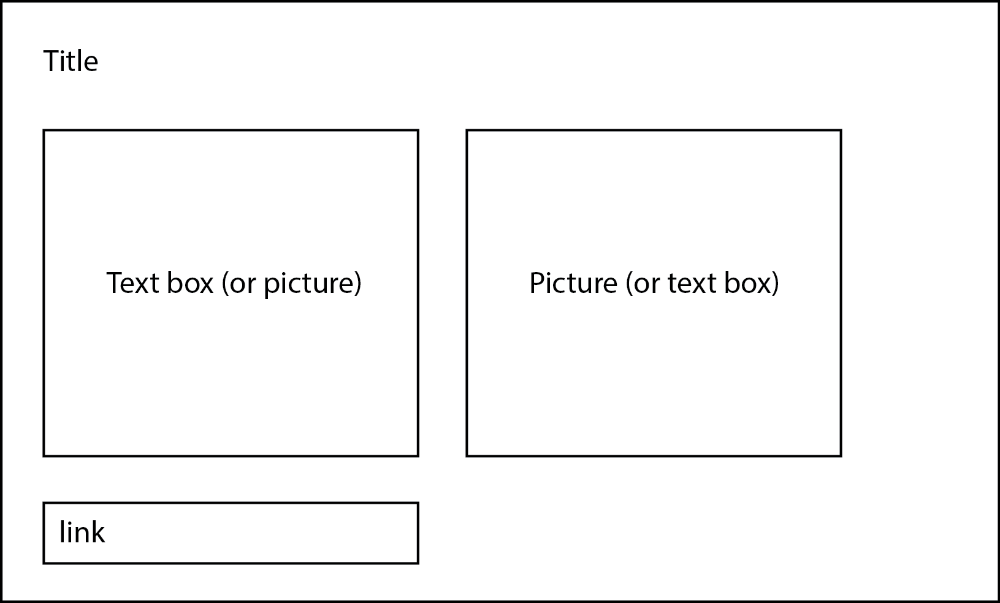

Back to syllabus
Readings
Readings should be completed before class, to ensure that you are prepared for in-class exercises
Overview
In this class, we will discuss the three kinds of files used to build a website, and publish our first website using GitHub.
Topics
- Who does what? Overview of website structure (HTML, CSS, Javascript)
- HTML tags, classes
- Including stylesheets and script files
- CSS styles
- Javascript
- Getting files from Git
- Running a python localhost server
- Publishing a webpage using GH pages
Final Project
Brainstorm 3 topics that you're interested in exploring for the final project; discuss in groups.
Assignment
Assignments should be completed after class, and submitted to the correct GitHub repository by midnight on Monday before the next class. Late or missing assignments will negatively impact your grade.
- PS01: Make a personal intro page with a title, a text box, a picture, and a link to a data visualization that
interests/inspires you.
- Use floating divs to position the page elements as shown in the image below (boxes represent div elements, and do not need visible outlines in your final page). Helpful article here.

- Use CSS to style the page; consider using different typefaces, background colors, etc. Example code for lots of options available here (find what you're looking for using the menu on the left). This video also has a good tutorial for using Google fonts in your webpage.
- You may also find this document helpful.
Final project:
- Identify three data sources that relate to your topics of interest (or new ones), and download .csv files for each. One dataset should have at least two series (categories); one should contain geographical information. (Nothing to turn in for the final project part; just bring files to class)
Assignment 1 submissions
Back to syllabus